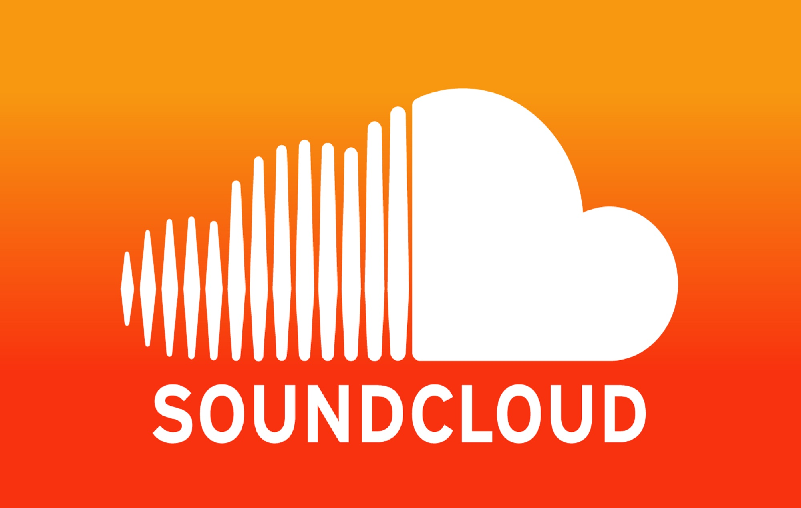

What is Media Platforms?
Media platforms are digital platforms or online services that allow users to create, publish, share, and consume different types of media content such as text, images, audio,
and video. These platforms have become an integral part of our daily lives, offering a wide range of tools and features that enable users to communicate, connect, and interact with others in innovative ways.
Media platforms can be social media platforms, blogging platforms, streaming platforms, music platforms, or any other platform that allows users to create, publish, and consume media content.
These platforms have created new opportunities for businesses, brands, and media professionals to reach and engage with audiences in innovative ways. They have also revolutionized the way we consume media content, making
it easier and more accessible than ever before.
The Popular and Well-known Media Platforms that you probably know or not.
Facebook

Facebook is a social media platform that allows users to connect with friends and family, join groups and communities, and share different types of media content, such as photos, videos, and
text posts. It has over 2.8 billion monthly active users and is one of the most widely used social media platforms in the world.
Instagram
Instagram is a visual platform that allows users to share photos and videos with their followers. It is particularly popular among younger audiences and has become an important platform for
influencer marketing and brand promotion. Instagram also provides a range of tools and features to help users create and edit their visual content, such as filters and editing tools.
Spotify
Spotify is a music streaming platform that allows users to listen to music, podcasts, and other audio content on-demand. It has over 365 million monthly active users and provides a range of
tools and features to help users discover new music and create playlists. Spotify also offers a range of advertising and sponsorship opportunities for brands and media companies.
Twitter

Twitter is a social media platform that allows users to share short, text-based messages known as tweets. It is particularly popular among journalists, politicians, and other public figures,
and has become an important platform for news and information sharing. Twitter also provides a range of tools and features to help users track and analyze conversations and trends on the platform.
Tiktok
TikTok is a video-sharing platform that allows users to create and share short-form videos set to music or other audio. It has become particularly popular among younger audiences and has spawned
a new generation of influencers and content creators. TikTok provides a range of tools and features to help users create and edit their videos, as well as to discover new content through its recommendation algorithm.
Twitch
Twitch is a live streaming platform that focuses on video game streaming and esports events, but has also expanded to other forms of content such as music, art, and talk shows. It has become
particularly popular among gamers and esports fans and has spawned a new generation of streaming influencers and content creators. Twitch provides a range of tools and features to help users stream their content, interact
with their audience, and monetize their streams through subscriptions, donations, and sponsorships.
YouTube

YouTube is a video-sharing platform that allows users to upload, share, and view videos. It has become the go-to platform for watching and sharing video content, with over 2 billion monthly
active users.
LinkedIn

LinkedIn is a professional networking platform that allows users to create profiles, connect with other professionals, and share professional updates and content. It is particularly popular
among job seekers and recruiters, and has become an important platform for professional development and networking. LinkedIn also provides a range of tools and features to help users create and publish content, as well
as to advertise and promote their services.
SoundCloud

SoundCloud is a music streaming platform that allows users to upload and share their music and audio content with others. It has become particularly popular among independent musicians and
producers, and has become an important platform for discovering new music and talent. SoundCloud also provides a range of tools and features to help users promote their music and engage with their audience.
Pinterest

Pinterest is a visual discovery and bookmarking platform that allows users to save and organize images and other visual content from around the web. It is particularly popular among people
looking for inspiration and ideas, and has become an important platform for visual content marketing and e-commerce. Pinterest also provides a range of tools and features to help businesses and brands promote their
products and services, as well as to track and analyze user engagement and behavior.
Many Media Platforms offer various Tools and features to help users publish and distribute their media content more effectively, as well as to conduct research and analysis. Here are some examples of the Tools
available on Media Platforms:
Video transcoding
This is the process of converting a video file from one format to another, such as from MP4 to AVI. Many video-sharing platforms like YouTube and Vimeo provide built-in transcoding tools to
help users optimize their videos for different devices and platforms.
Downloading
Many media platforms offer the option to download media content, such as videos, images, and audio files. This is useful for researchers and media professionals who need to collect and analyze
media data.
Acknowledgement
Some media platforms require users to acknowledge the source of the content they use in their own work. For example, some academic journals may require researchers to cite the sources of images,
videos, or other media content they use in their research.
These tools and features can help users create and distribute media content more efficiently and effectively, as well as conduct research and analysis on media content available on the platforms.